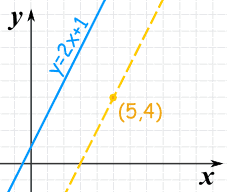
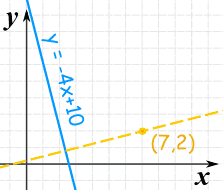
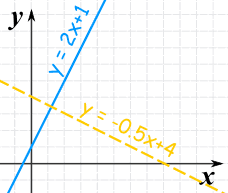
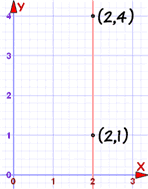

Parallel and Perpendicular Lines
How to use Algebra to find parallel and perpendicular lines
Parallel Lines
How do we know when two lines are parallel?
Their slopes are the same!
|
The slope is the value m in the equation of a line: y = mx + b |
 |

Example:
Find the equation of the line that's:
- parallel to y = 2x + 1
- and passes though the point (5,4)
The slope of y = 2x + 1 is 2
The parallel line needs to have the same slope of 2.
We can solve it by using the "point-slope" equation of a line:
y − y1 = 2(x − x1)
And then put in the point (5,4):
y − 4 = 2(x − 5)
That's an answer!
But it might look better in y = mx + b form. Let's expand 2(x − 5) and then rearrange:
y − 4 = 2x − 10
y = 2x − 6
Vertical Lines
But this doesn't work for vertical lines ... I explain why at the end.
Not The Same Line
Be careful! They may be the same line (but with a different equation), and so are not parallel.
How do we know if they are really the same line? Check their y-intercepts (where they cross the y-axis) as well as their slope:
Example: is y = 3x + 2 parallel to y − 2 = 3x ?
For y = 3x + 2: the slope is 3, and y-intercept is 2
For y − 2 = 3x: the slope is 3, and y-intercept is 2
So they are the same line and so aren't parallel
Try it!
Perpendicular Lines
Two lines are perpendicular when they meet at a right angle (90°).
To find a perpendicular slope:
When one line has a slope of m, a perpendicular line has a slope of −1m
In other words the negative reciprocal

Example:
Find the equation of the line that's
- perpendicular to y = −4x + 10
- and passes though the point (7,2)
The slope of y = −4x + 10 is −4
The negative reciprocal of that slope is:
m = −1−4 = 14
So the perpendicular line will have a slope of 1/4:
y − y1 = (1/4)(x − x1)
And now we put in the point (7,2):
y − 2 = (1/4)(x − 7)
That answer is OK, but let's also put it in "y=mx+b" form:
y − 2 = x/4 − 7/4
y = x/4 + 1/4
Try it!
Quick Check of Perpendicular
When we multiply a slope m by its perpendicular slope −1m we get simply −1.
So to quickly check if two lines are perpendicular:
When we multiply their slopes, we get −1
Like this:

Are these two lines perpendicular?
| Line | Slope |
| y = 2x + 1 | 2 |
| y = −0.5x + 4 | −0.5 |
When we multiply the two slopes we get:
2 × (−0.5) = −1
Yes, we got −1, so they are perpendicular.
Vertical and Horizontal Lines
The previous methods work nicely except for a vertical line:

In this case the gradient is undefined (as we can't divide by 0):
m = yA − yBxA − xB = 4 − 12 − 2 = 30 = undefined
And for a horizontal line the slope is 0, so the negative reciprocal rule
−1m doesn't work here because we would get −10 which is undefined
And our quick check also fails because 0 × undefined isn't −1.
So just rely on the fact that:
- Vertical lines are parallel to each other
- Horizontal lines are parallel to each other
- Vertical is perpendicular to Horizontal (and vice versa)
Summary
- Parallel lines: same slope (m)
- Perpendicular lines: negative reciprocal slope (−1/m)